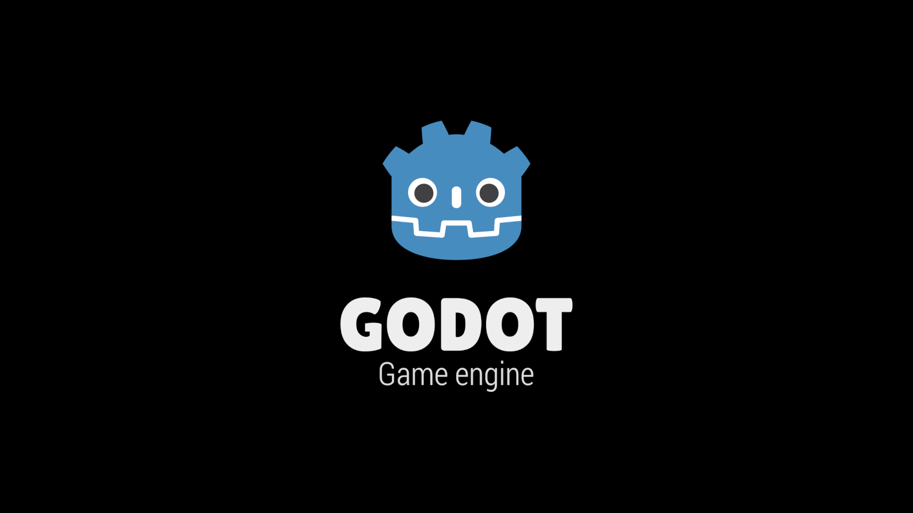
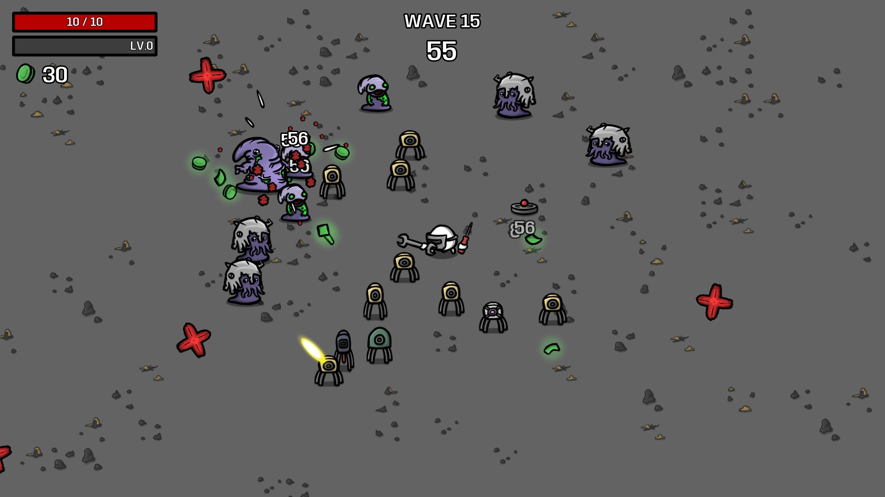
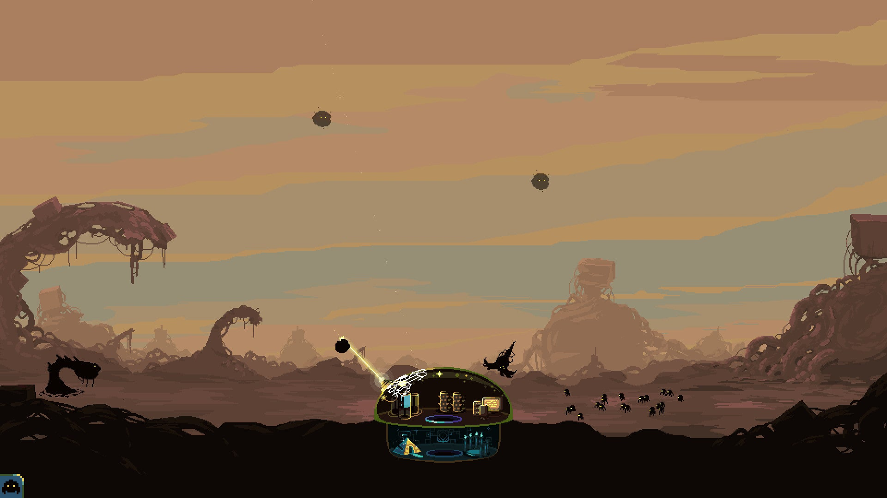
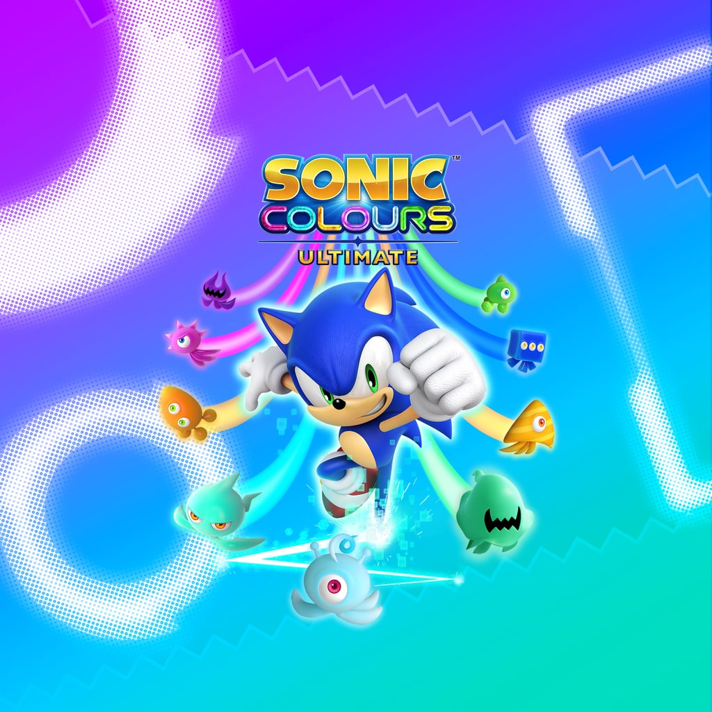

Godot
Godot is an open source free to use game engine available on Steam as well as the official Godot site. It allows for code in C++, C# and it's very own python-esque programming language called GDScript.

The Good
- Godot is renowned for it's user friendly interface and is a common go to for beginners
- Godot is excellent for 2D games with some 2D projects that take weeks in other engines taking days in Godot
- GDScript is a high level programming language that has scripting similar to Python. Many Python programmers may find GDScript easy
The Bad
- Godot is not an industry standard, barely any game companies use it. Only having experience with Godot may be limiting in the work force
- 3D can be a bit limiting in the level design department, with CSG bodies being notoruisly frustrating to work with. No terrain system built in fuels that fire
- Errors can be a bit cryptic and hard to understand at first
Games made in Godot
Numerous games have been made in this engine, such as;
Brotato

Brotato is shoot em' up rougelike released in 2023 developed by Thomas Gervraud. You play as a potato who can weild up to six weapons at once to fight off hoards of aliens. You can also use items and different builds to gain more advantages
Dome Keeper

Dome Keeper is a 2022 tower defence game developed by German studio Bippinbits and published by Raw Fury. You defend your dome against waves of aliens and mine for resources to help in your quest.
Sonic Colours Ultimate

While the Wii original was not developed in Godot, the 2020 remaster was. Dr. Eggman has set up his own interstellar amusment park, using a mysterious alien lifeforms energy as a power source known as the Wisps. Sonic and Tails investigate Eggman's amusment park and quickly learn the truth and team up with the Wisps to put an end to Eggman's evil deeds.